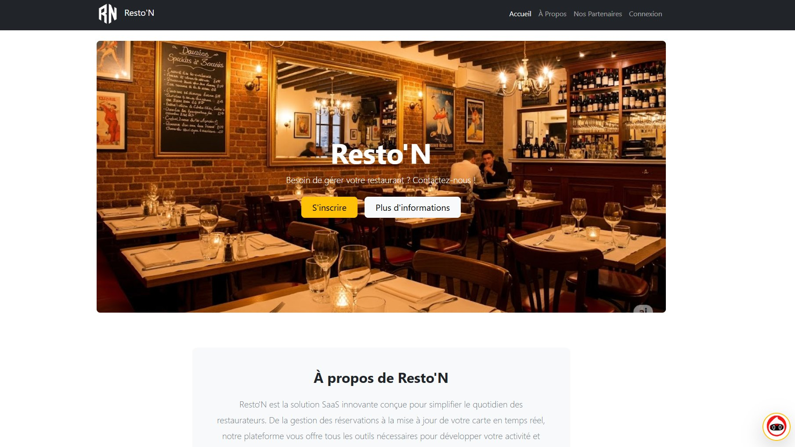
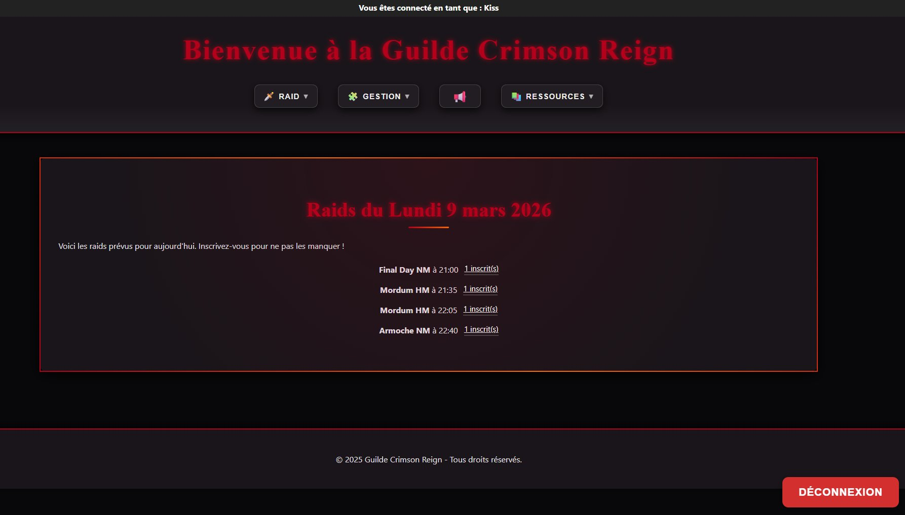
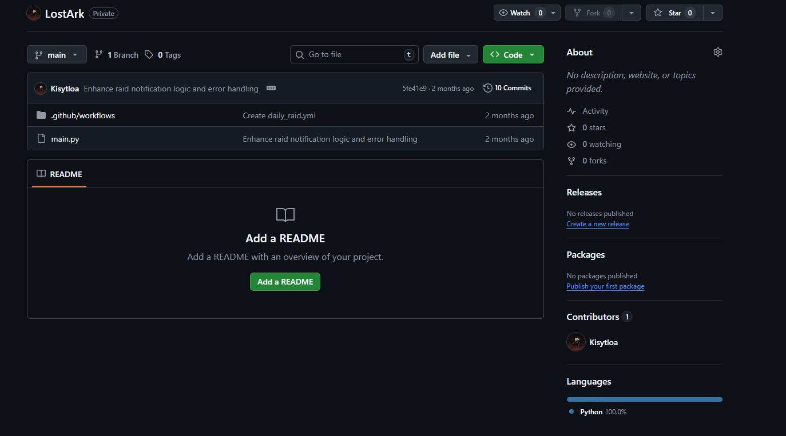

Portfolio
Projets académiques et personnels — du code qui tourne en production.

Solution complète de gestion de restaurant développée dans le cadre d'une SAE. Couvre la gestion des réservations, des commandes et des stocks en temps réel.

Site web complet pour une guilde Lost Ark. Regroupe l'ensemble des besoins d'une communauté de joueurs avec un back-office d'administration complet.

Scripts d'automatisation pour des tâches administratives et scolaires répétitives. Intégration d'APIs tierces avec gestion des permissions et sécurité des interactions.
Un projet à réaliser ? Je suis disponible.
Me contacter